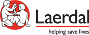

Group Contract

(1) Members
(1.1) Full names and e-mail addresses
(2) Group terms, norms, mentions and conditions
(2.1) Group purpose
- The purpose of our group is identifying a medical problem/need and designing a practical, cost-efficient solution that will hopefully help decrease mortality rates.
(2.2) Group goals
- Our goals are to augment our communication as a group through coordinated efforts, dividing the workflow and teamwork. We also hope to improve our knowledge in the medical field, discovering new technologies(VR/AR) and learning how to implement them within our future projects. Finally, we wish to work on our professionalism as future multimedia designers.
(2.3) Group ambition(s)
- Our group strives to create a useful, high-quality product that will aid Laerdal in their future medical endeavors.
(2.4) Skills in development
- Our group is focusing on developing our means of research, concept design, technical knowledge and communication. We will be working with new technologies which we hope to assimilate as quickly and as efficiently as possible, such as VR or 360-degree videos.
(2.5) Group strategy
- Our group will focus on research and brainstorming in the beginning, followed by frequent face-to-face meetings as well as discussion through online means (Facebook, Skype, etc.) where we will share our ideas and findings and afterwards decide on what we will consider the optimal solution for the situation at hand.
(2.6) Schedule and other administrative issues
- Our group will convene every school day for 2-3 hours for project work, followed by another 2-3 hours of individual work when necessary.
- The person in charge of group hand-ins will be Eusebiu Sofeiga, and we will be using his webspace(sicthrax.com/laerdal) to upload files relevant to the project. This is, however, subject to change depending on his availability, thus any member can take over the responsability of uploading content to the webspace(sicthrax.com/laerdal) and/or hand-in assignments.
- Our group will create a dedicated website for the Laerdal project(sicthrax.com/laerdal) which will include a description of the issue that we are tackling, snippets of our progress and a group journal which will document our struggles and successes.
- A Facebook group and Google Drive will be created to share files between eachother with ease. GitHub might also be used.
(2.7) Dividing tasks
- All of our members will be tasked throughout the project with researching different relevant information about the project. After we have come to a decision regarding our solution, we will divide the workflow based on each person’s skills; we will have a design team, a coding team, a coordinator, a facilitator. All of these parties will work together to create a final product; the work will be done from both home and meet-ups, each and every one of us being tasked with both group work and individual work.
(2.8) Decision making
- Our group will employ the principles of Democracy when making a decision regarding the project; work etiquette will be handled by the coordinator.
(3) Other aspects
(3.1) Group work evaluation
- Our group will evaluate our work using SCRUM meetings after every session.
(3.2) Punishment for violating group norms
- If the offender repeatedly violates group norms then they are liable to first buy food and beverages for the entire group, then be kicked out in the case that they don't correct their behaviour.
(3.3) Other
- Certain group members have extracurricular obligations such as work or other studies to attend to which will limit our schedule.